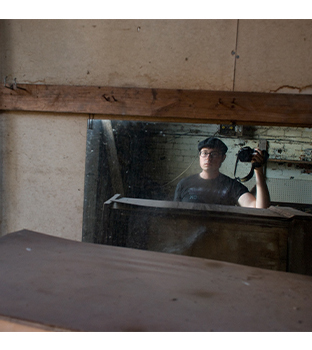
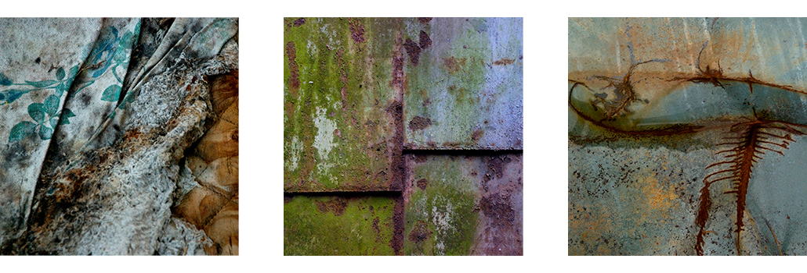
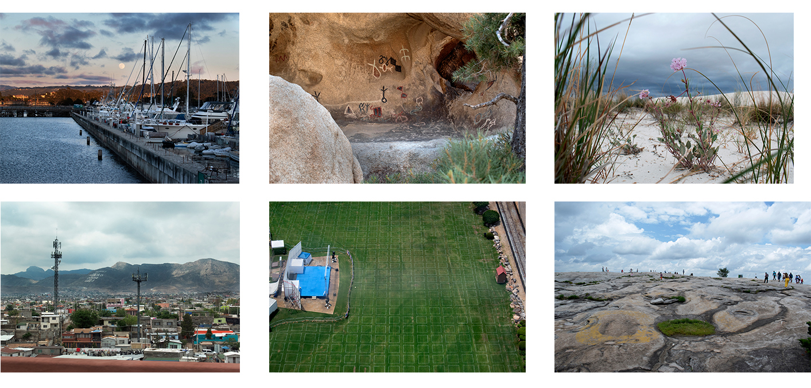

Chapter 1: Born Historian
I was taking pictures long before it was cool. No seriously, long before
Facebook and Instagram, like George Harrison taking a selfie at the Taj
Mahal, I was a high-school proto-food blogger photographing pancakes at
Denny's. I've always loved taking pictures, since I held that first camera
anyway. My high school German teacher had me pegged to be the German Club
President, but I was only a sophomore. I had to hold other roles until my
senior year, the first of which was Club Historian. I was given a very
primitive digital point and shoot camera, and it was a blast.

Chapter 2: Ginsburg Moments
From the start, I was trying to get candid moments amongst my friends. It
was pretty easy. I had the camera so often that they quickly forgot it was
there. I wish I had access to a lot of those early moments, but alas, they
are stuck in the purgatory of an old external hard drive that won't get
recognized by any computer of mine. Thankfully I saved these classic black
and whites. We were those kids, buckets of coffee and bursting ash trays at
2am. These pictures were taken in the world famous HyHo diner. Brain sandwich
anyone?
Chapter 3: Early Among Legends
As soon as I started producing photos regularly, I sought to get my
work published in magazines. The first to do so was JPGMag, a
user-submitted community of photographers and enthusiasts who, alongside
editors' picks, voted the best pictures into the magazine. My picture was
pretty decent, a portrait of my elderly grandma holding her birthday
cake, submitted to the theme Emotion Capture. But that picture on the
opposite page, my God. I recognized it right away as a legend, a once
in a lifetime idea captured perfectly. How could my grandma compete? Well,
she couldn't. She's dead now. An NFT
of the other pic, however,
recently
sold for nearly 500k.
Chapter 4: Working the Camera
I decide to major in photojournalism, shooting for class and my job at the
student-run newspaper, hundreds of frames a week. It's so much fun, a new
"office" every day, courtside seats to basketball games and BB King concerts.
I love a lot of what I do, but there are some reservations. Am I invading
people's privacy? Does this work actually improve the world like they
say... or is that that just smoke the industry blows up it's own ass?
Chapter 5: Reflections
College is coming to an end. My interest in photography has never been
higher. My camera has become my fifth limb as I explore subjects beyond
the newsroom. I dabble in night photography and produce some new work
for group shows in Carbondale and Paducah. This picture was exhibited
at the Yeiser Art Center, a selection of the Paducah Photo International
Competition and Exhibition.
Chapter 6: Cairo Project
My first year out of college sees me hanging around town. The rent is cheap
and I have lots of free time to create. Almost immediately I knew I wasn't
pursuing a career in journalism. After taking a class on the subject, I'm
still fascinated with the town of Cairo. I make a lot of work there, exploring
a style of abstract photography that has become a signature of my style.
Work from this series comprised my first ever solo exhibition.

Chapter 7: Other Pursuits
Almost as soon as I found myself on a roll, life intervened. I decided to
move to Nashville, TN. I thought my photography would continue in the same vein
as before: explore my environment, let the scenery unveil itself to me. But the
scenery in Nashville is actually quite ugly and uninspiring when you aren't
on a disc golf course. My artistic side switched gears, into wine and
fermentation, and I became an expert in something else. Photography followed too,
but it was far less inspired, a lot like Nashville in fact, a bit more
corporate and forced.
Chapter 8: Selfie-ville
Like for so many of us in the 2010s, social media was new and exciting. It
seemed necessary and wonderful, until it was gamified into turning humans
against each other. During this time, content creation created a vast
document of our human experience. Every little nuance was photographed
to a fault. The best angles on everything were found, and yet, today it
doesn't seem like we've found ourselves in a place as perfect as what appears
on Instagram. Of course, I made my fair share of selfies during this time.
My creative drive found an outlet in reinventing myself, a necessary and
ongoing project in my effort to shed layers of trauma and conditioning.

Chapter 9: Like Riding a Bike
It's been many years removed from the time when I clicked a million frames
or more, yet I still find myself taking photos, usually with my phone. Covid
descends like a dark age, and like many others I'm sure, I find a bit of relief
in acts of nostalgia. I decide to buy a new DSLR camera after nearly 15 years
since buying my first. The picture quality is so much better! But the core
problem of a decade ago remains: what do I actually want to shoot these days?
I'm still figuring that out. Mainly I'm shooting for myself, my love of nature.
